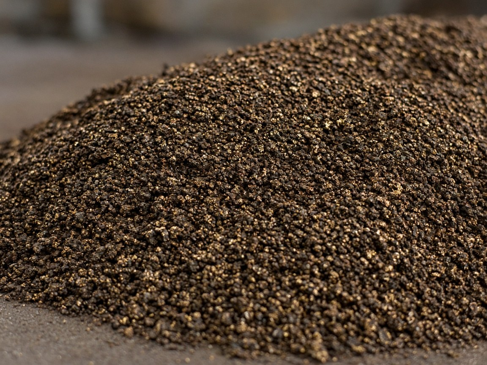
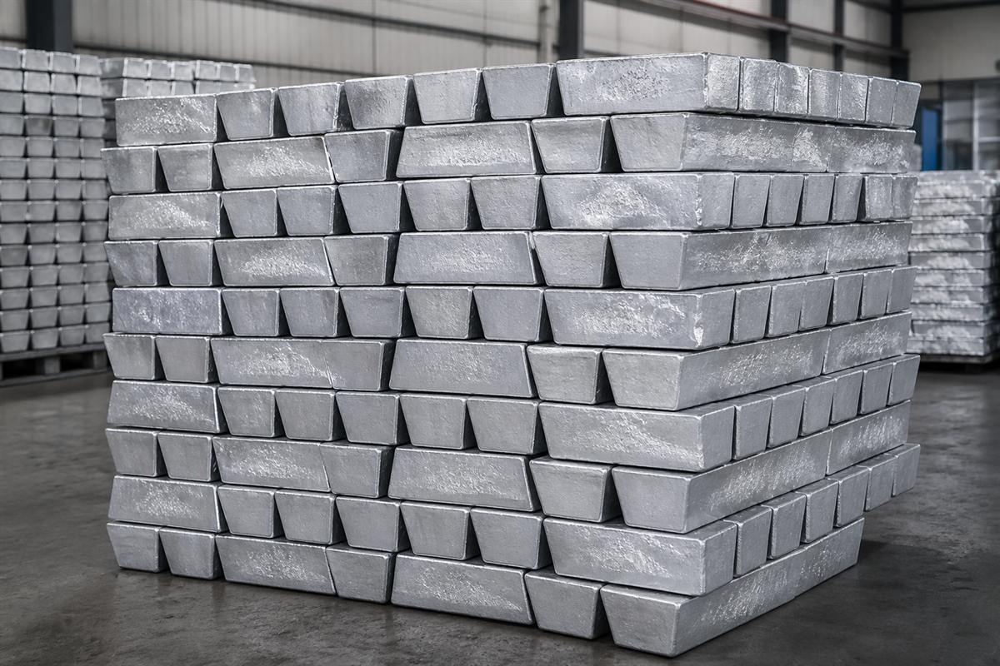
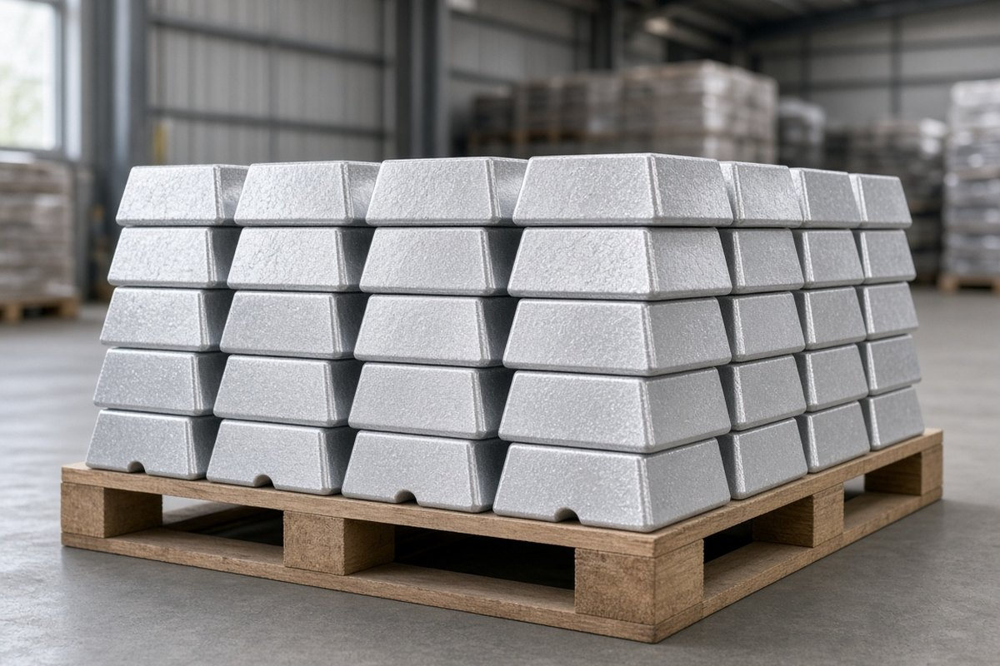
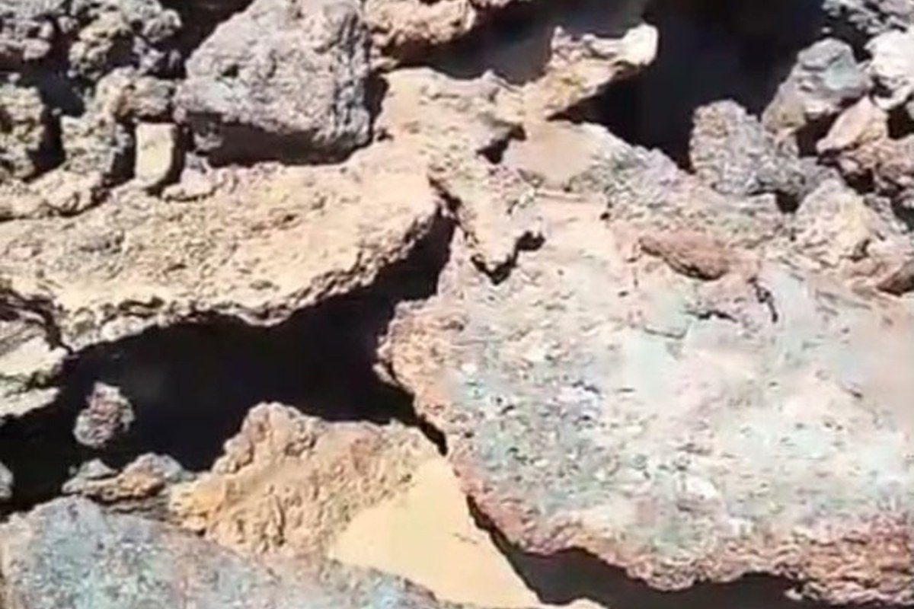
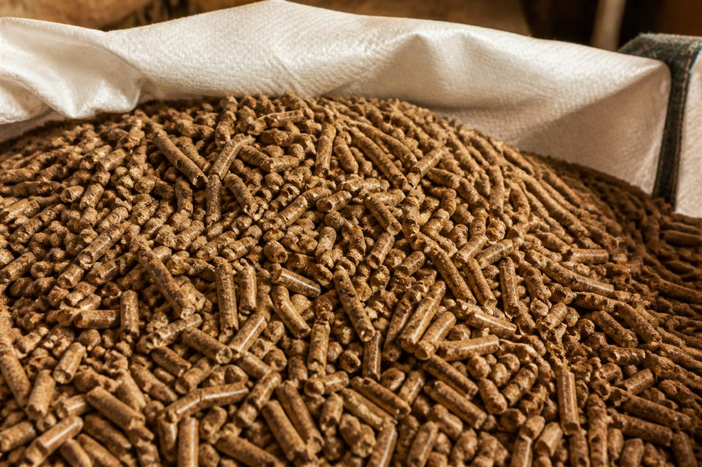
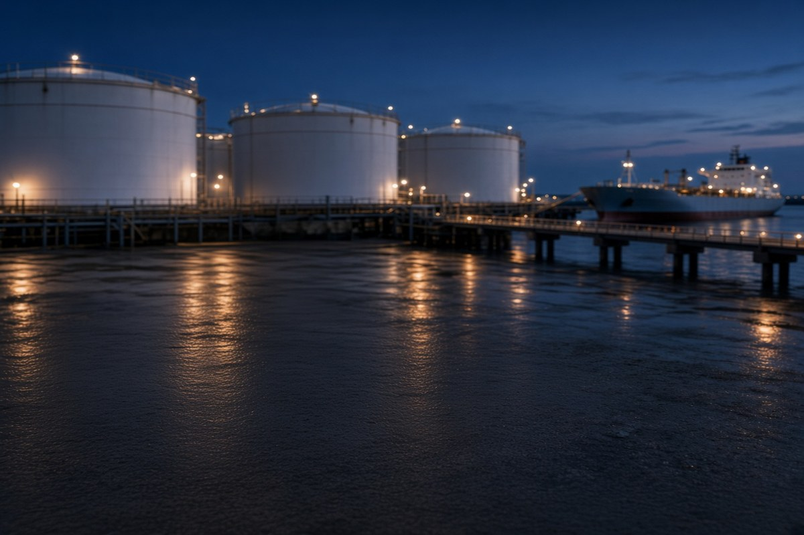
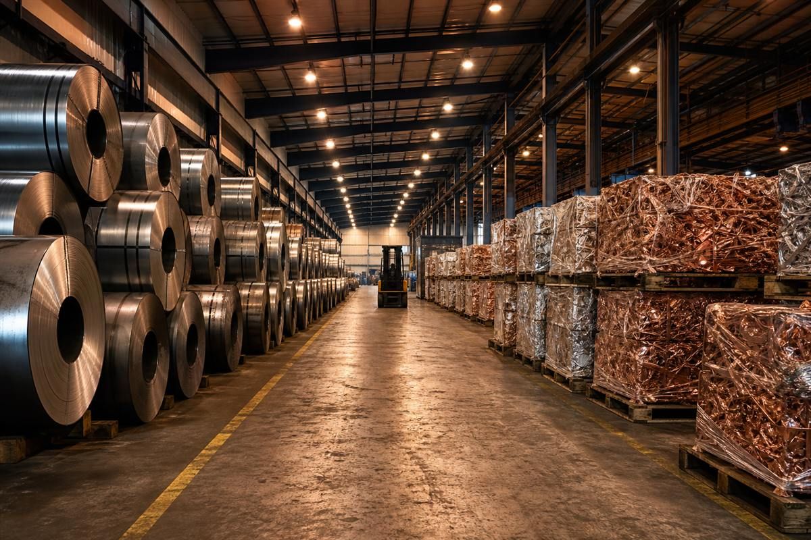

비철금속
구리 스크랩 · 구리 정광 · 알루미늄 잉곳 · 주석 괴 · 주석·니켈 슬래그









구리 스크랩 · 구리 정광 · 알루미늄 잉곳 · 주석 괴 · 주석·니켈 슬래그
산업용 우드펠릿 · EN590 경유
카올린 · 고령토
The Company

VL M&C는 비철금속·정광·슬래그·우드펠릿·EN590·카올린을 소싱하고 인도합니다.
해도에 없는 산지라도 찾아 갑니다. 단순 중개가 아닙니다. 규격·품질·물류를 함께 관리하고, 필요한 사양과 물량, 납기를 기준으로 소싱부터 인도까지 맞춰 드립니다.
Organization
한 회사가 세 품목군을 직접 다룹니다.
취급 품목
Reports
바이어용 소개서·브리핑과, 제조사에 바로 보낼 1페이지 파트너 브리프를 따로 두었습니다. 제조사 브리프는 한 장 전체를 여기서 볼 수 있습니다.
Company Profile · Resources Trading
VL M&C가 자원 무역을 진행합니다. 비철금속 스크랩, 구리 정광, 알루미늄 잉곳, 제련 슬래그, 산업용 우드펠릿, EN590 경유, 카올린을 규격·품질·물류와 함께 맞춥니다.
About
VL M&C는 자원 무역 회사입니다.
단순 중개가 아닙니다. 등급·성분·이물을 먼저 맞추고, 검사 결과로 인도합니다.
| 항목 | 내용 |
|---|---|
| 상호 | VL M&C |
| 한국 | 인천광역시 서구 청라한내로72번길 7-15 |
| 사업 영역 | 자원 무역 / B2B 소싱 · 검수 · 수출입 · 납품 |
| 자원 취급 | 구리 스크랩 · 구리 정광 · 알루미늄 잉곳 · 주석 괴 · 주석/니켈 슬래그 · 우드펠릿 · EN590 경유 · 카올린 |
| 연락처 | VL M&C han4797@gmail.com |
Contents
조직도·품목 상세·소싱 거점·거래 프로세스는 아래 페이지들에서 더 자세히 다룹니다. 인쇄해서 그대로 전달하셔도 됩니다.
본 소개서는 일반 안내입니다. 가격·재고·선적 일정은 문의 시점의 오퍼와 검사 결과에 따릅니다. 품목별 수출입 인허가는 계약 전 관세사 및 현지 규정으로 확인합니다.
VL M&C · Resources Trading
구리 스크랩, 구리 정광, 알루미늄 잉곳, 주석 괴, 주석·니켈 슬래그, 우드펠릿, EN590 경유, 카올린을 필리핀·인도네시아·DRC·잠비아에서 소싱합니다. EN590은 한국 하역을 울산 기준으로 문의합니다. 가격·재고는 문의 시점의 오퍼와 검사 결과에 따릅니다.
HS 7404
한국 HS 7404 수입은 2025년 약 32.3만 톤, 2026년 상반기 약 17.6만 톤입니다. 전선·밀베리 등 국제 등급과 수분·이물이 거래의 핵심입니다.
HS 4401.31
2025년 한국 수입 약 392.9만 톤. 인도네시아산은 약 90만 톤(23%)으로 주요 원산지입니다. 함수율·발열량·회분을 계약 조건으로 맞춥니다.
HS 2710.19
유럽 자동차용 경유 규격 EN 590입니다. 황 10 ppm, 세탄가·밀도·인화점을 계약 조건으로 맞추고, 한국 하역은 울산을 기준으로 문의합니다. 원산지·물량·가격은 문의 시점 오퍼와 검사 결과에 따릅니다.
위 수치는 공개 무역통계를 정리한 참고값이며 인용 시점에 따라 갱신됩니다.
Contents
공개 브리핑이며 내부 거래 상대·계약 단가는 포함하지 않습니다. 회사 소개서와 함께 전달해도 됩니다.
Producer Partner Brief · Resources
VL M&C가 자원 소싱과 인도를 진행합니다. 이 한 장은 생산 파트너에게, 견적 전에 협업 구조를 전달하기 위한 자료입니다.
Korea
VL M&C 본사가 있는 한국 거점입니다.
Resources
구리 스크랩 · 구리 정광 · 알루미늄 잉곳 · 주석 괴 · 주석/니켈 슬래그 · 우드펠릿 · EN590 경유 · 카올린
등급·성분 또는 BOM을 발주 전에 고정합니다.
승인 샘플 또는 지정 검사기관으로 확인합니다.
첫 물량으로 품질을 확인한 뒤 확대합니다.
선적 일정·포장·사후를 계약에 남깁니다.
품목·확정 사양·월 생산능력·초도 물량을 보내 주시면, 사양 확정 시트로 회신합니다.
Korea
일반 안내입니다. 가격·재고·선적 일정은 문의 시점의 오퍼에 따릅니다. 내부 거래 상대와 계약 단가는 넣지 않았습니다. 바이어용 소개서·브리핑과 별도로 제조사에 보내 주세요.
Cargo
비철금속·에너지·산업광물 세 품목군입니다. 사진과 핵심 규격을 보고 고르시면, 카탈로그는 문의 후 보내 드립니다.
구리 스크랩·정광, 알루미늄 잉곳, 주석 괴, 주석·니켈 슬래그. 등급과 성분 기준으로 맞춥니다.
Resources Digital Showroom
Copper Scrap
전선·밀베리·버치 등 국제 통용 등급의 구리 스크랩을 취급합니다. 산지는 인도네시아 파푸아와 DRC·잠비아 두 곳입니다.
Resources Digital Showroom
Copper Concentrate
필리핀산 구리 정광을 한국 제련소용으로 취급합니다. 기준 품위 Cu 약 25%, 정광(Concentrate) 기준이며 원광(ROM)은 제외합니다. 가격·재고·Assay는 문의 시점 오퍼에 따릅니다.
Resources Digital Showroom
Aluminum Ingot
북수마트라 쿠알라탄중 INALUM의 1차 비합금 알루미늄 잉곳입니다. 재용해 후 자동차 부품·건축재·압출 소재로 씁니다.
Resources Digital Showroom
Tin Ingot
제련을 마친 인도네시아산 주석 괴를 공급합니다. 주석 원광·슬래그와 다른 금속 잉곳입니다.
Resources Digital Showroom
Tin Slag
주석 제련 과정에서 발생하는 슬래그를 유통합니다. 주석 및 유가금속 회수 원료로 활용됩니다.
Resources Digital Showroom
Nickel Slag
니켈 제련 슬래그를 취급합니다. 스테인리스·특수합금 원료 회수와 산업 부산물 자원 순환에 쓰입니다.
산업용 우드펠릿과 EN590 경유. 함수율·발열량, 황 함량 기준으로 맞추며 경유는 울산 하역 기준입니다.
Resources Digital Showroom
Wood Pellets
산업용 보일러와 발전에 쓰이는 바이오매스 연료입니다. 함수율·발열량·규격을 기준으로 안정 공급합니다.
Resources Digital Showroom
EN590 Diesel · ULSD
유럽 규격 EN 590 초저유황 경유를 취급합니다. 황 함량 10 ppm, 세탄가·밀도·인화점을 계약 조건으로 맞추며, 한국 하역은 울산을 기준으로 문의합니다.
인도네시아 벨리퉁산 카올린. 백색도와 알루미나 함량 기준으로 누들·괴상·분체를 공급합니다.

대표 규격
Kaolin · China Clay
인도네시아 벨리퉁에서 나오는 산업용 고령토입니다. 도자기·제지·페인트 원료로, 누들·괴상·분체를 백색도와 알루미나 함량 기준으로 맞춰 한국 수요처에 공급합니다.
대표 시료 기준입니다. 계약 물량은 선적 전 검사 결과에 따릅니다.
The Chart
구리 정광은 필리핀, 알루미늄은 북수마트라 쿠알라탄중, 우드펠릿은 칼리만탄, 니켈은 술라웨시, 구리 스크랩은 파푸아와 DRC·잠비아에서 소싱합니다. EN590 경유는 울산 하역을 기준으로 문의합니다. 항만 거점은 다르에스살람과 자카르타입니다. 한국 본사는 VL M&C입니다.
시연 · Demo
샘플 B/L 번호를 넣으면 가상 항로가 지도에 표시됩니다. 실제 선사 추적과 연결되어 있지 않습니다.
본 기능은 홈페이지 시연용입니다. 실제 컨테이너 위치·ETA는 계약 후 선사·포워더 자료로 안내합니다.
구리 정광
필리핀
필리핀 구리 정광 공급 거점
알루미늄
인도네시아
북수마트라 INALUM 1차 알루미늄
호주
호주
서호주
우드펠릿
인도네시아
보르네오 우드펠릿 공급 거점
니켈
인도네시아
술라웨시 니켈 공급 거점
구리
인도네시아
파푸아 구리 공급 거점
구리
콩고민주공화국 · 잠비아
중부아프리카 구리 공급 거점
자원 거점
탄자니아
아프리카 동부 인도양 항만 자원 공급 거점
자원 거점
인도네시아
자와섬 항만 자원 공급 거점
한국 거점
대한민국
VL M&C 본사가 있는 한국 거점입니다.
EN590
대한민국
한국 경유 하역 거점. 문의 시점 오퍼 기준
The Voyage
품목과 등급·사양, 물량, 납기를 기준으로 조건을 정리합니다.
국내외 공급망에서 규격에 맞는 물량을 확보하고 품질을 확인합니다.
선적 서류와 하역 일정을 맞춰 인도합니다.
반복 공급은 재고와 선적 일정을 함께 맞춥니다.
Contact
품목·수량·납기를 알려 주시면 취급 가능 여부와 조건을 회신드립니다.
규격서·카탈로그는 문의 후 보내 드립니다.
Korea
소싱 · 발주 · 계약 · 검수 · 인도